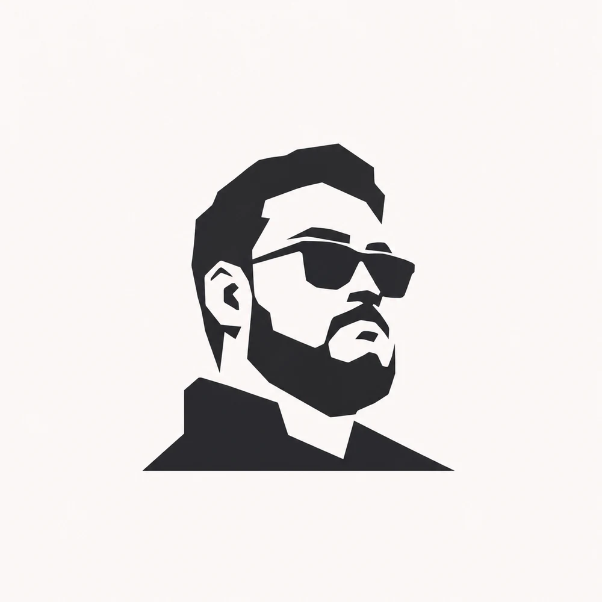

01 / THE QUESTION
از کجا شروع میکنم؟
از «چرا؟»
معمولا اولین چیزی که میشنوم یه راهحله. من دوست دارم یه قدم عقبتر برم و بفهمم اصلا چه مشکلی داریم، برای کی و چرا حل کردنش مهمه.
کنجکاوی، قبل از فیچر. همیشه.
عنوانش؟ قابل مذاکرهست.
سلام، من جوادم. از بازاریابی شروع کردم و رسیدم به ساختن محصول؛ از فروش و بیمه تا اپلیکیشنهای مشتریان. هم از فهمیدن مسئله خوشم میاد، هم از اینکه ببینم آخرش واقعا کار میکنه.

01 /یک آشنایی کوتاه
اگه بخوام بگم توی کار چطورم، احتمالا از این سه تا سؤال شروع میکنم.
از کجا شروع میکنم؟
معمولا اولین چیزی که میشنوم یه راهحله. من دوست دارم یه قدم عقبتر برم و بفهمم اصلا چه مشکلی داریم، برای کی و چرا حل کردنش مهمه.
کنجکاوی، قبل از فیچر. همیشه.
وسط مسیر چه میکنم؟
با تیم فنی درباره API و محدودیتها حرف میزنم، با کسبوکار درباره نیازها و با طراحی درباره تجربه. بعد کمک میکنم تصمیمها به اولویت و کاری که بشه ساخت تبدیل بشن.
محصول، کار یک نفر نیست.
کی کار تموم میشه؟
لانچ برای من خط پایان نیست. به بازخورد و عددها برمیگردم تا بفهمم چیزی که ساختیم واقعا گرهی باز کرده یا هنوز باید بهترش کنیم.
کار کردن محصول، مهمتر از صرفا ساخته شدنه.
02 /چند عدد از مسیر
کاربر در سبد محصولات B2C
درخواست روزانه در سبد محصولات
رشد سرنخهای روزانه در مسیر بهبود جذب و فروش
تا تحویل بکآفیس بیمه
اینها نتیجه کار تیمهایی است که در ساخت و پیشبرد محصولاتشان نقش داشتهام.
03 /یک داستان واقعی
قطعی اینترنت دیماه و جنگ ۱۲ روزه ما رو به فکر یک سیستم جدید برای بیمه انداخته بود؛ سیستمی که حتی وقت اختلال اینترنت، کار سازمان و آدمهاش متوقف نشه. تازه جلسه کیکآف رو رفته بودیم و دیاگرامهای اول درآمده بود که دوباره جنگ شد.
این بار ول نکردیم. با تیم، توی سه هفته بکآفیس بیمه رو به بهرهبرداری رسوندیم. هشت ماه بعد، فروش آنلاینش هم در مدیران کلیک راه افتاد.
نقش من: از تحلیل فرایند و تعریف نیازمندیها تا هماهنگی تیمها و استقرار محصول.
درباره این تجربه بپرساز یک مسئله واقعی تا محصولی که تیم بیمه بتواند با آن کار کند.
چطور کار بیمه رو در روزهای اختلال ادامه بدیم؟
04 /چیزهایی که رویشان کار کردهام
چند نمونه از محصولاتی که در تاپتک، کنار تیمهای مختلف برای مشتریان مدیران خودرو پیش بردم.
SALES / INSURANCE / CUSTOMER JOURNEY
سکوی فروش و خدمات دیجیتال
از خرید خودرو تا بیمه و خدمات مشتری؛ مدیران کلیک جایی است که چندین سرویس و مسیر مشتری به هم میرسند.
تجربه مشتری / سه اپلیکیشن
مشتری بعد از خرید خودرو تازه وارد یک مسیر طولانی میشود. این اپلیکیشنها بخشی از ارتباط او با خدمات برندهای MVM، فونیکس و اکستریم هستند.
محصولها رو ببین
01MVMapp.mvmco.ir 02Fownixapp.fownix.com 03XTRIMapp.xtrimcars.comهر لینک، محصول اصلی رو در یک تب جدید باز میکنه.
05 /کمی شخصیتر
از محتوا و بازاریابی شروع کردم، مهندسی کامپیوتر میخونم و کمکم جذب جایی شدم که تکنولوژی، آدمها و کسبوکار به هم میرسن.
یکی از همبنیانگذارهای DanAI بودم؛ استارتاپی در حوزه یادگیری. اون تجربه به موفقیتی که میخواستیم نرسید، ولی برای من بخشی از مسیر یاد گرفتن ساختن بود.
من از مسئلههای مبهم فرار نمیکنم؛ دوست دارم بفهمم داستان از چه قراره و کمک کنم بالاخره یه قدم جلو بریم.
06 /بیا ارتباط بگیریم
برای فرصتهای مدیریت محصول، همکاری یا حتی یک گفتوگوی خوب درباره ساختن محصول، خوشحال میشم ازت بشنوم.